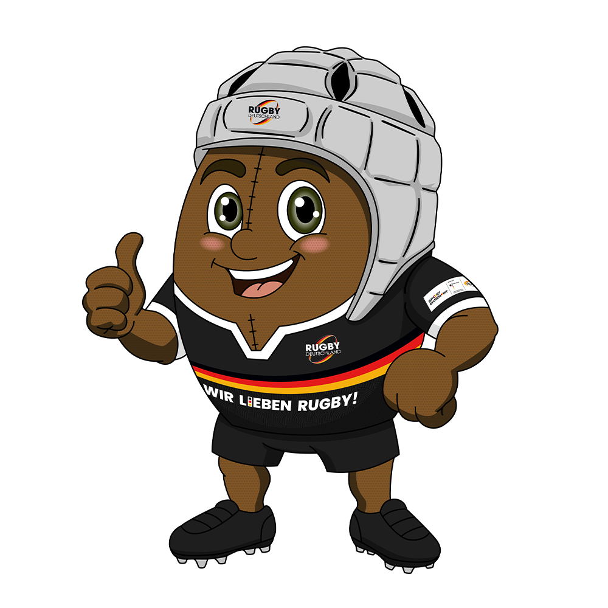

🏉 Tackle Right – Rugby im Sportunterricht

🎯 Ziel des Unterrichtsvorhabens
Dieses Unterrichtsvorhaben führt die Lerngruppe über kontaktarme Rugby-Formen an Fairness, Teamgeist, Respekt, Disziplin und Solidarität heran.
Rugby wird dabei als sicheres, wertorientiertes Spielfeld genutzt, das Bewegung, Koordination und soziale Kompetenzen gleichermaßen fördert.
🧩 Kompetenzen
- Regeln verstehen, einhalten und reflektieren
- Räume erkennen und zum Raumgewinn nutzen
- In Angriff und Verteidigung taktisch handeln
- Teamfähigkeit, Fairness, Respekt und Solidarität zeigen
- eigenes Spiel- und Sozialverhalten einschätzen
🗓️ Reihenübersicht (4 x 45 Min.)
| Stunde | Thema | Schwerpunkt |
|---|---|---|
| 1 | Einstieg in Rugby & Werte | Sicherheit, Fairness, Grundlagen |
| 2 | Freilaufen & Ausweichen | Raumwahrnehmung, 1-gegen-1 |
| 3 | Touch-Rugby | Regelspiel, Abseits, Passspiel |
| 4 | Spielform & Reflexion | Anwendung, Fairplay, Auswertung |
🧠 Pädagogische Leitidee
„Tackle Right“ versteht Rugby als Instrument zur Wertevermittlung. Im Unterricht werden körperliche Aktivität und soziale Lernziele (Respekt, Fairness, Teamgeist, Disziplin, Solidarität) systematisch verknüpft.
Die Spielformen sind bewusst kontaktarm angelegt, um Sicherheit zu gewährleisten und dennoch das typische Raumgewinn- und Teamspiel erlebbar zu machen.
📂 Struktur dieses Repos
./
├── README.md
├── material/
│ ├── stundenplanung.md
│ ├── verlaufsplaene.md
│ ├── beobachtungsbogen.md
│ └── bewertung_rubric.md
├── bilder/
│ ├── cover.png (Platzhalter)
│ ├── stunde1.png (Platzhalter)
│ ├── stunde2.png (Platzhalter)
│ └── stunde3.png (Platzhalter)
└── assets/
└── badges.md📝 Verwendung im Unterricht
-
material/stundenplanung.mdgibt dir den Überblick über die Reihe und die Anbindung an den Bildungsplan BW 2016. -
material/verlaufsplaene.mdenthält detaillierte Verlaufspläne für 4 x 45 Minuten. -
material/beobachtungsbogen.mdbietet ein einfaches Tool zur Diagnose und Rückmeldung. -
material/bewertung_rubric.mdschlägt ein Raster zur Leistungsbewertung vor.
🖼️ Bilder & Medien
Im Ordner bilder/ kannst du eigene Fotos aus dem Unterricht oder lizenzfreie
Grafiken ablegen.
Vorschläge:
- Coverbild mit Rugby-Ball auf Spielfeld
- Grafik zu den Werten (Respekt, Fairness, Teamgeist, Disziplin, Solidarität)
- Piktogramme zu Angriff/Verteidigung und Raumgewinn
🔗 Externe Grundlagen
- Rugby Deutschland – Projekt „Tackle Right“ (Rugby im Schulsport)
- Rugby Tackle Right
- Bildungsplan 2016 Baden-Württemberg, Fach Sport, Sekundarstufe I
Hinweis: Bitte beachte die Urheberrechte der Originalmaterialien. Verlinken und in eigenen Worten zusammenfassen ist unproblematisch, direkte Übernahme von Grafiken und Texten ggf. nur mit Erlaubnis.
💡 Ideen zur Erweiterung
- Erweiterung zu einer 6- oder 8-stündigen Reihe mit Technikvertiefung
- fächerverbindende Einheit zu Werten & Fairplay
- Einsatz von Tablets zur Videoanalyse von Laufwegen und Teamverhalten
Viel Erfolg und viel Spaß beim Unterrichten! 🏉🎓